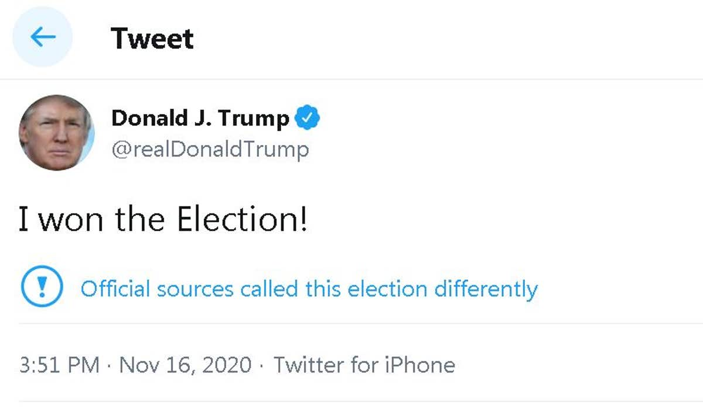

Trump Is Pushing QAnon Candidates Into the GOP Mainstream
Arizona State Rep. Mark Finchem got a coveted spot warming up the crowd for former President Donald Trump at an Iowa rally last week. Days later he was in Virginia, speaking onstage ahead of top Trump ally Steve Bannon.
And Finchem’s next big speech will be at a major QAnon conference in Las Vegas this weekend called “For God & Country: Patriot Double Down” alongside a number of other GOP candidates and elected officials that Trump has helped make right-wing stars.
Finchem, who’s running to be Arizona’s secretary of state, isn’t even the only Trump-endorsed candidate who wants to run elections in a swing state who will address the conference. Kristina Karamo, who Trump has endorsed in her bid to be Michigan secretary of state, is also slated to speak, as are a handful of other GOP lawmakers Trump has praised in the past.
“Come to the Patriot Double Down Where I will be speaking!!!” Karamo excitedly posted on her Facebook page.
Trump’s decision to endorse QAnon-affiliated candidates because they support his lies about the 2020 election has further mainstreamed the dangerous movement within the Republican Party.
“Trump is less concerned about whether these candidates support QAnon than he is about whether they support the Big Lie, and whether they will be in a position to help him if he decides to run again,” said Amarnath Amarasingam, a QAnon and political extremism expert and professor at Queens University in Canada.
The liberal watchdog group Media Matters has identified 45 people already running for Congress who’ve promoted QAnon theories, as well as eight gubernatorial candidates and many more legislative candidates. Most are fringe candidates who won’t win their primaries, much less their elections. But the sheer number shows how deeply QAnon has sunk its teeth into the GOP.
“You’ve had an increase in QAnon-believing candidates out there coupled with Trump echoing and validating a lot of the sentiments,” Media Matters President Angelo Carusone told VICE News.
Amarnath Amarasingam
Trump’s embrace of Finchem, Karamo, and other fringe candidates elevates them within the conservative movement and gives them cachet, even as they bolster his lies that the election was stolen from him with state-specific falsehoods. They, in turn, lend the street cred they get from their Trump endorsement to QAnon, offering wink-and-nod support to the movement by adopting its in-jokes and terminology, speaking at QAnon-adjacent rallies like this weekend’s Vegas gathering, or even more explicitly embracing it like Finchem has done.
By centering the “Big Lie” that the election was stolen from him as his first and only concern, and by pushing candidates who have trumpeted those lies the loudest and most effectively without any concern for their even wilder beliefs, Trump is inviting the QAnon movement through the front door of the Republican Party.
Donald Trump Tweet | Haartez
Carusone argued that the spread of QAnon is troubling not just because of its poisonous lies and threats of violence but also because it helps mainstream the candidates who back Trump’s election lie. Creating a new category of out-there candidates means the numerous Republicans who echo Trump’s lies are now simply seen as rank-and-file lawmakers, shifting the Overton Window of political discourse by normalizing them, and pushing fringe falsehoods into the GOP mainstream.
“Now election deniers who don’t think that Democrats and the media are vampires therefore are the ‘reasonable people,’” Carusone said. "There’ll be a point in time… that some of the QAnon ideas now that were at the conventions we were seeing last summer become part and parcel and indistinguishable from republican orthodoxy. A lot of the ideas will become standard Republican fare.”
That’s already happened. The concept of the “deep state” originated on QAnon message boards, was laundered through right-wing media and became a staple of Trump’s own speeches. And QAnon was the first to push the idea that the 2020 election would be stolen from Trump, months before the president himself began pushing that lie. Now, polls show that roughly two-thirds of Republicans believe that the election was stolen from him, and a quarter of Republicans believe the QAnon falsehood that Trump will be reinstated as president by 2022. Trump is basing his endorsements and support on whether candidates support or oppose his lies about widespread election fraud.

PHOTO BY RICK LOOMIS | GETTY IMAGES
Trump has repeatedly refused to reject QAnon. When NBC News’ Savannah Guthrie pressed him to reject the movement a few weeks before the 2020 election, he refused to do so. “I just don’t know about QAnon,” Trump said, before admitting he’s in on the joke: “They are very much against pedophilia, they fight it very hard.”
And his son has been happy to cozy up to the movement even more explicitly.
“They should start reporting the number of kids that go missing every day the way they report COVID numbers,” Donald Trump Jr. posted to his 5.2 million Instagram followers on Sunday.
This wink-and-nod from the former president and his closest allies reassures Republicans with QAnon-tinged views that they’re safe to come out, normalizing their fringe views.
They’re now growing bolder, reassured that Trump and his broader movement have their backs. Trump endorsed a recent rally at the Michigan Capitol to protest the state’s election results. Michigan state Rep. Dair Rendon, one of the featured speakers, took the stage wearing an American flag pin with a gold Q emblazoned on it.

When asked why she wore the pin, Rendon said she did it partly because she knew there were plenty of like-minded people in the crowd.
“A lot of the people that are here today follow the same channels and they understand,” she told VICE News after laying out her pro-Q views.
Karamo, who also spoke at that rally, hasn’t publicly echoed QAnon’s core conspiracies. But she’s been happy to push other falsehoods. Karamo recently accused Michigan Secretary of State Jocelyn Benson of being “obsessed with corrupting our election process,” and falsely accused her and other Democratic election officials of intentionally rigging the 2020 election.
“These people were placed in those battleground states strategically to ensure that there was massive cheating and fraud in the election,” Karamo said on One America News Network last week.
But Finchem’s approach to QAnon is more like a bear-hug than a wink and a nod. He has posted QAnon content to his social media accounts on multiple occasions, and has explicitly endorsed the conspiracy theory’s foundational tenet: that a secret cabal of satan-worshipping Democrats, Hollywood elites, and members of a shadowy government “deep state” are running a child sex ring and are hell-bent on destroying Trump.
“They're finding so many kids. We’ve got a serious problem in this nation. And that's one of the things that disturbs me so much about our current congressional state of affairs. There's a lot of people involved in a pedophile network and the distribution of children, and that makes me absolutely sick,” he said during a March appearance on the religious conservative network Victory News. “And unfortunately, there's a whole lot of elected officials that are involved in that.”
Trump doesn’t seem too concerned about Finchem’s views, however. He’s just happy the Arizona lawmaker has gone all-in to bolster Trump’s election lies.
“Mark Finchem is with us tonight, and what a job he’s done. Mark, great job, Mark. You’re going to win big, Mark. Because he’s tough. They say he’s controversial. It’s not controversial. He’s actually not controversial,” Trump said during his Iowa rally.
Finchem and Karamo will be with like-minded folks this weekend. The conference is being organized by John Sabal, known as “QAnon John,” who recently called for a “military mutiny” against President Joe Biden and has promoted openly antisemitic propaganda. Three other lawmakers who were involved in Arizona’s partisan and deeply flawed “audit” of Maricopa County’s 2020 election results are slated to attend: Arizona state Sens. Wendy Rogers and Sonny Borrelli, who Trump has praised in past statements, and state Rep. Leo Biasiucci.
They’ll rub elbows with a who’s who of QAnon influencers: Jim and Ron Watkins, who some experts believe is “Q” himself. The father and son have been instrumental in turning QAnon into a worldwide phenomenon on their message board 8kun (previously known as 8chan). It was here that the anonymous person or people behind QAnon posted exclusively for almost three years, during which time the movement went from a fringe conspiracy to a movement with tens of millions of adherents.
Ron Watkins launched a bid for Congress in Arizona last week, further weaving QAnon into the fabric of the GOP. Just days earlier he posted a picture with Kari Lake, Trump’s candidate for governor, on his hugely popular Telegram channel saying he had just dined with the former TV anchor. Lake downplayed the meeting, telling VICE News she met Watkins at a meet-and-greet with dozens of other people—but didn’t respond when asked if she knew who Watkins was and his history in promoting and facilitating the QAnon conspiracy.
QAnon’s followers have actively tried to make it harder to track their work. In recent months, many followers have tried to dump the QAnon branding, claiming it was simply a creation of the mainstream media. Instead they reference the same conspiracies in more oblique ways. But it’s not that subtle: The event’s logo features a queen of hearts and a seven—and in case the prominently featured Q isn’t enough, those two cards add up to 17 in blackjack (Q is the 17th letter of the alphabet, and the number has become symbolically important to the movement).
The event’s promotional video, which heavily features Watkins (aka CodeMonkeyZ), also includes the QAnon slogans “Where we go one, we go all” and “The Great Awakening.”
It’s not just those speaking at the conference, either. Pennsylvania state Sen. Doug Mastriano, who like Finchem was in the crowd during the January 6 riot at the U.S. Capitol, has repeatedly used the hashtags #QAnon and #TheGreatAwakening on Twitter.
Mastriano was once a nobody in the Pennsylvania Legislature, but he has worked his way onto Trump’s radar and into his good graces by relentlessly pushing the lie that Pennsylvania’s elections had seen widespread fraud. With Trump’s help—and attacks from the president against other Republicans who weren’t keen on his plan—Mastriano has helped push the Pennsylvania GOP into a sham audit modeled after Arizona’s mess.
Sabal’s June QAnon event in Dallas drew Texas Rep. Louie Gohmert and Texas Agriculture Commissioner Sid Miller as well as then-Texas Republican Party Chairman Allen West, who made the QAnon slogan “We are the storm” into the Texas Republican Party slogan during his tenure. West, who has insisted he’s “not into internet conspiracy theories ” and denied that it was borrowed from QAnon, is now running for Texas governor. General Michael Flynn, Trump’s onetime national security advisor and a major figure in the QAnon movement, endorsed West onstage—shortly after he seemed to endorse the idea of a coup against Joe Biden along the lines of the successful Burmese military coup against that country’s elected president.
All this increased acceptance of QAnon candidates is alarming extremism experts.
“Having more and more candidates in high office who aren't concerned with facts, truth, science, or evidence—and who routinely erode social trust in modern institutions, except when it comes to getting people out to vote for them—is deeply harmful the long-term health of democracy,” said Amarasingam. “Many QAnon supporters have even gone a step further, calling for—and gleefully anticipating—an outright military coup or the assassination of political leaders. Adding more of this kind of discourse to the public sphere brings nothing good.”